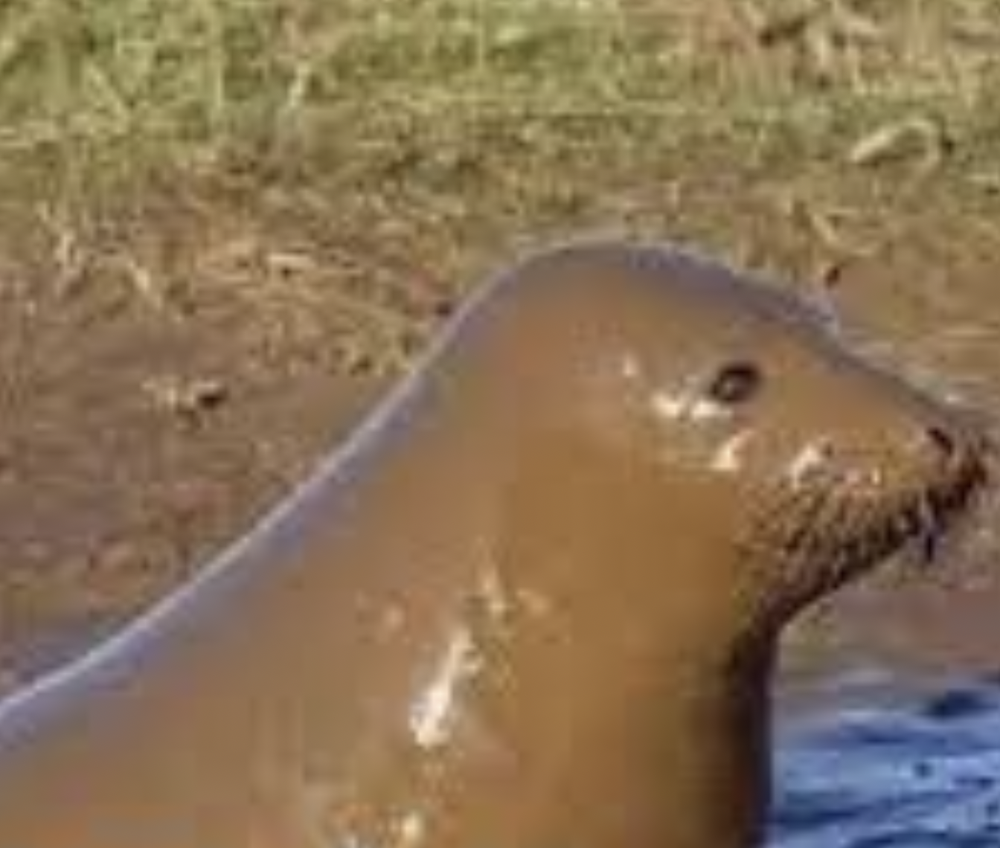

mark_
01
_fact.html
i used to have a cat. his name is sucas or soop or poo or the man
he is half maine coon and half english shorthair
he only has one eye
he used to watch tv in bed with me
he is very long and big.

< now tap on this seal.